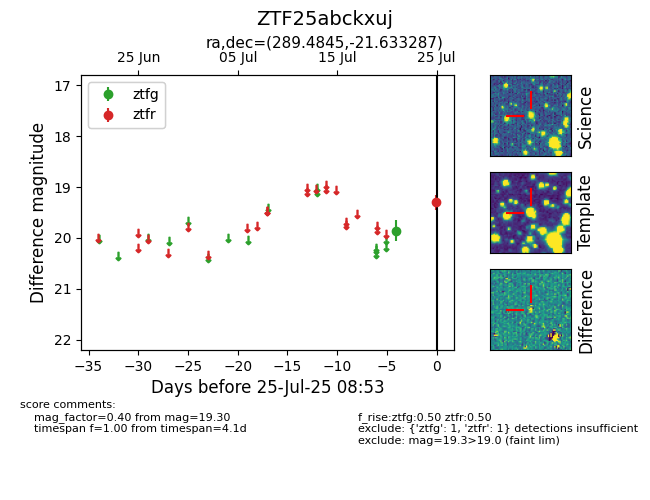

Target ZTF25abckxuj at 2025-07-25 08:53, see:
FINK: fink-portal.org/ZTF25abckxuj
Lasair: lasair-ztf.lsst.ac.uk/objects/ZTF25abckxuj
ALeRCE: alerce.online/object/ZTF25abckxuj
alt names
ZTF25abckxuj (ztf,fink)
coordinates:
equatorial (ra, dec) = (289.4845,-21.63329)
galactic (l, b) = (16.1076,-15.28093)
photometry
last ztfg=19.86, ztfr=19.30
1 ztfg, 1 ztfr detections
